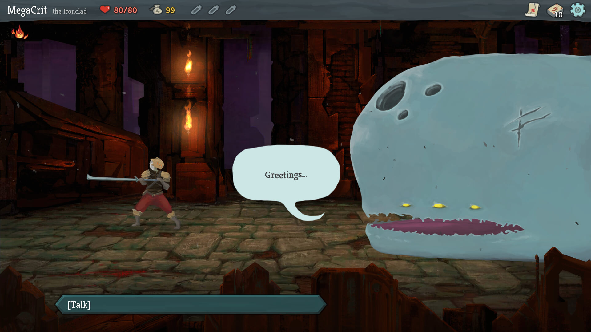
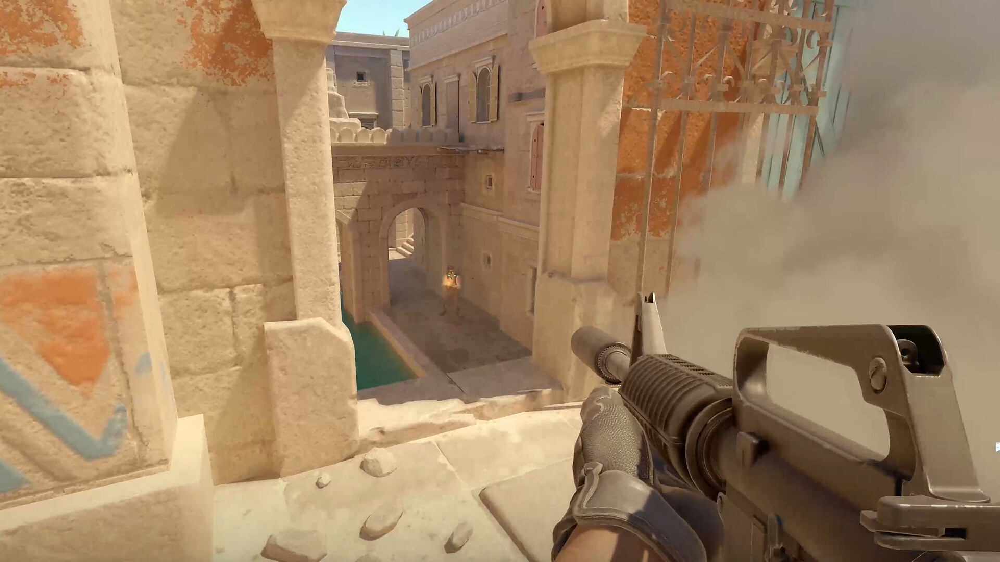
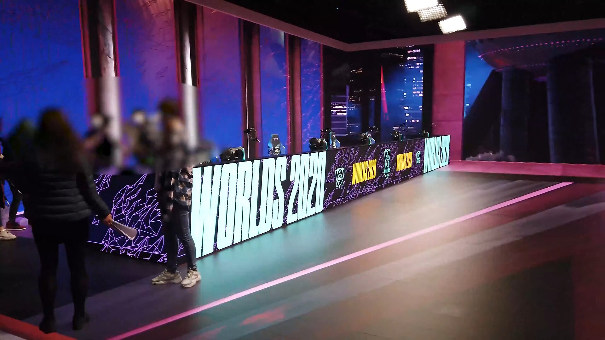

一局的时间是所有设计参数里最容易被忽略、也最难改动的那一个。它不描述玩法，却决定了玩家要在什么场合腾出时间、失败一次要付出多少、以及这款游戏能不能被搬上转播台。 本站四款游戏的单局时长差了近十倍，却各自稳定运行了很多年。这一页研究的就是这个数字从哪来、又管住了什么。
一局有多长，决定了谁来玩
单局时长一旦定下，就同时锁定了三件事：玩家需要多长的空闲、失败一次的代价、以及这场对局能不能被打断。四款游戏给出的答案完全不同。
{kind=link}
时间既筛选场合，也筛选人。《炉石传说》一局十分钟上下，可以在等车和午休时打开；《王者荣耀》二十分钟一局，需要一段相对完整的空档；《杀戮尖塔》四十分钟起步，玩家通常要专门安排一段时间；《反恐精英 2》介于两者之间，但和王者一样属于多人对局，一旦匹配成功就必须打完。
愿意为一局预留一小时的人，和只想利用十分钟空隙的人，几乎是两类玩家。时长先划出受众，然后玩法才有机会说话。
把长局切成小节拍
一局时间长，不代表玩家要连续承受长时间的压力。四款游戏都把自己切成更小的单位，让玩家在每一个小单位里得到一次完整的判断、一次结果和一次休息。
杀戮尖塔：幕、楼层与节点
一层塔由若干节点串成路线，普通战斗、精英、事件、商店和休息处交替出现。一个节点一到三分钟，打完就能停下。玩家真正感知的"一局"，其实是几十次"选哪条路、要不要碰这个精英"。
反恐精英 2：回合、半场与赛点
一个回合不到两分钟，阵亡之后等到下一回合重新开始。半场十二个回合结束时交换阵营并重置经济，让落后的一方拿到一次结构性的重新开始。整场比赛因此变成二十几个可以单独复盘的小局。
王者荣耀：兵线、团战与推塔
一局二十分钟内部还有节奏。前期对线发育，中期围绕暴君、主宰这类中立资源开团，防御塔被推掉之后可活动的空间迅速变大。玩家感受到的不是二十分钟，而是若干个"这一波要不要打"。
炉石传说：回合与法力曲线
回合制把对局切成一人一次的固定节拍，法力水晶每回合增加一颗，到第十颗封顶。这条曲线本身就是时间表：前期铺垫、中期交换、后期决胜，节奏由系统替玩家排好。
{kind=link}

分段的作用不是把长局变短，而是让玩家随时有一个可以停下的位置。愿意让人停下的游戏，玩家才敢在碎片时间打开它。
长局与短局各自要付的代价
时长不是免费的选择。长局换来厚度，也换来退出成本；短局换来轻便，也换来对局中每个参与者的高依赖。
长局的问题在于"押注越来越重"。 《杀戮尖塔》一局四十到九十分钟，前面所有选牌都押在同一套牌上，失败很疼。它必须做到两件事：允许玩家随时退出并保留进度，同时让每一次选牌都立刻见效，否则玩家不会开始第二局。《反恐精英 2》一场比赛三十到六十分钟，中途离开会直接伤害四名队友，于是它用弃赛惩罚和投降投票来处理离场；经济系统又让前一回合的失败影响后一回合，长局里的每一步都互相牵制。
短局的问题在于"每局都容易被忘掉"。 《王者荣耀》二十分钟一局，说不长，但中途挂机会影响四个人，所以它用信誉积分和禁赛来约束离场行为。《炉石传说》一局十分钟，输掉重来的代价很小，玩家可以说走就走；代价是对局本身的重量变轻，很难形成"整晚泡在里面"的感觉。这也解释了为什么同一个客户端里还要放一个半小时上下的酒馆战棋——用另一种时长覆盖另一类场合。
{kind=link}

结束点：什么时候允许玩家离开
玩家离开游戏的位置，几乎总是一个干净的边界：一局结束、一个回合结束、一个节点结束。设计者真正要回答的问题，是这种边界出现得有多频繁。
单机设计的优势在这里最明显。玩家可以在任意楼层退出并保留进度，一局四十分钟的爬塔因此能被拆成几次二十分钟的游玩。代价是"战败即终结"，它收回成本的方式是重开一局的成本同样很低。
单个回合不到两分钟，玩家随时知道"再过一会儿就是一局结束"。半场交换阵营时双方经济重置，落后的队伍不至于失去整场比赛。这类机制的作用是让"继续玩"看起来仍然值得。
一局二十分钟不可中断，中途离开会伤害队友，所以离场成本由信誉积分与禁赛来承担。它也提供投降投票，让已经输定的对局提前结束，避免玩家被迫在必败的局面里待满二十分钟。
一局十分钟上下，输掉的损失小到可以直接再开一局。这让它成为四款游戏里启动成本最低的一款，"再来一局"几乎不需要理由。短局的风险是玩家对单局的投入感更弱。
把一局想象成一段不能中断的视频。长度超过玩家能安心腾出的时间，就必须提供存档或者投降；短于这个时间，就必须接受输赢很快被忘掉。
时长被赛制与直播反向锁定
竞技类游戏的单局时长并不是设计团队单方面说了算。一场比赛要卖给转播方、要排进赛事日程、要让选手保持专注，单局长度于是变成必须被标准化的参数。
-
2012–2023
先赢十六回合的时代
《反恐精英：全球攻势》的竞技模式以先赢十六回合为胜，最长要打满三十回合，一场比赛拖到一个半小时以上并不罕见。
-
2023.09
《反恐精英 2》改为先赢十三回合
新版本把一局上限压到二十四回合，赛点提前到第十三回合，十二比十二进入加时。单场比赛变短，转播时段也因此更容易编排。
{kind=link}

《王者荣耀》走的是另一条路：单局长度基本不动，改用多局连续对抗来填满一个转播时段，一局二十分钟左右的设计让每局之间都能插入解说与广告。《炉石传说》的官方赛事长期要求选手带上多套卡组连续应战，一局十分钟的长度正好把一场对阵控制在可接受的时间内。反过来说，一局动辄数小时、结果难以预期的品类，天生就很难被搬上转播台。
时长从来不只是玩家体验问题。它同时被选手的体力、转播的时段表和观众的注意力约束，最后写进规则里的那个数字，往往是三方妥协的结果。
- 单局时长是最难改的设计参数之一，它先决定受众与使用场合，再决定玩法细节。
- 长局靠分段变得可以承受：幕与节点、回合与半场、法力曲线，都是把长时间切成可暂停的小单位。
- 长局的代价是退出成本高，必须提供存档或投降；短局的代价是单局投入感更弱。
- 玩家总是在干净的边界离开，边界的密度决定了一款游戏适合什么场合。
- 竞技游戏的时长会被赛制与转播反向锁定，《反恐精英 2》从十六回合缩到十三回合就是一个例子。